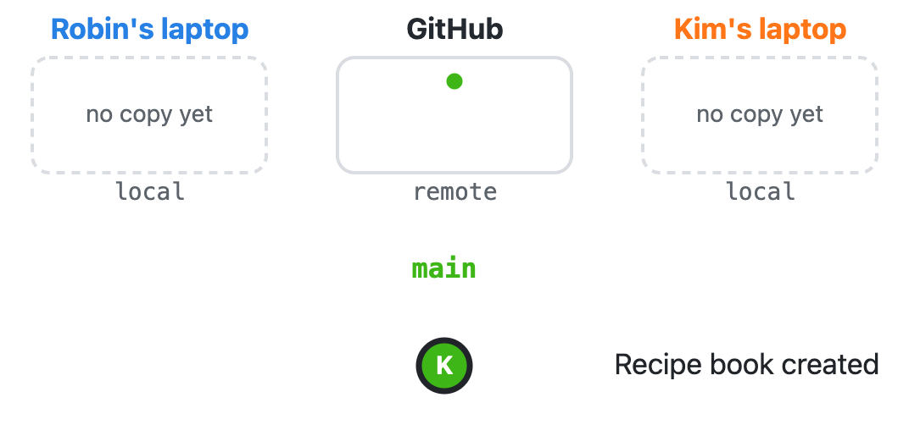
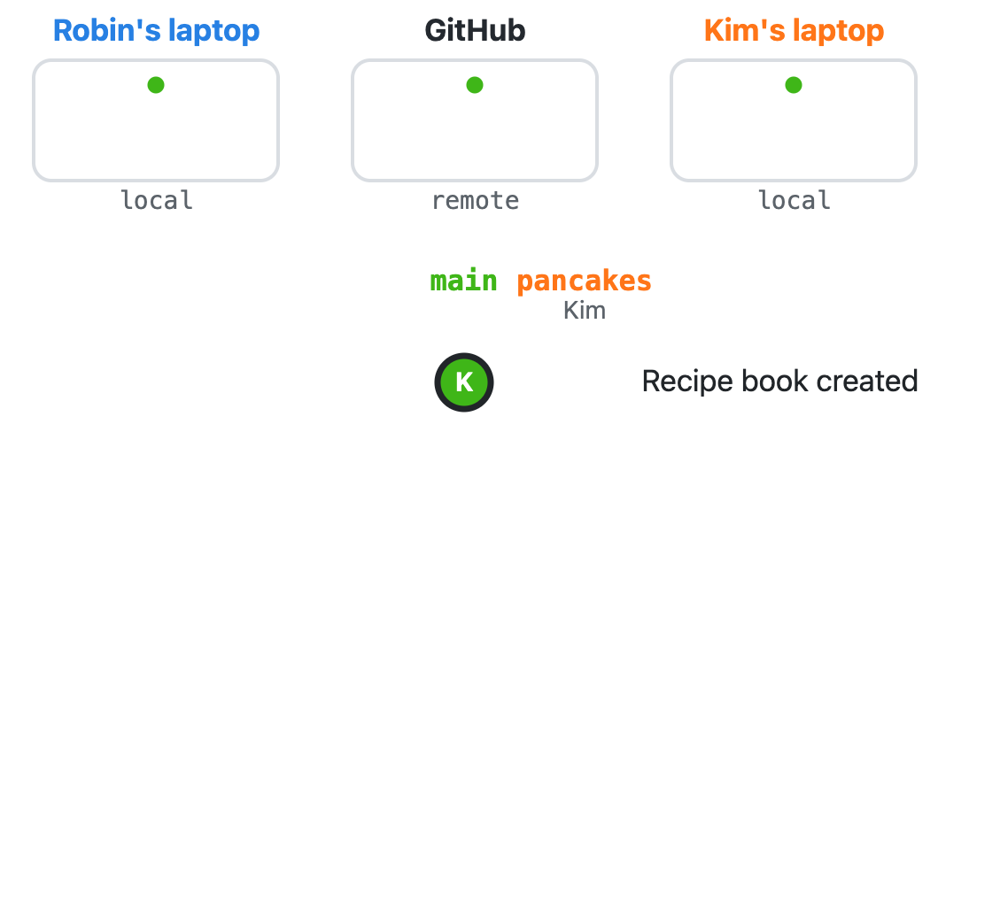
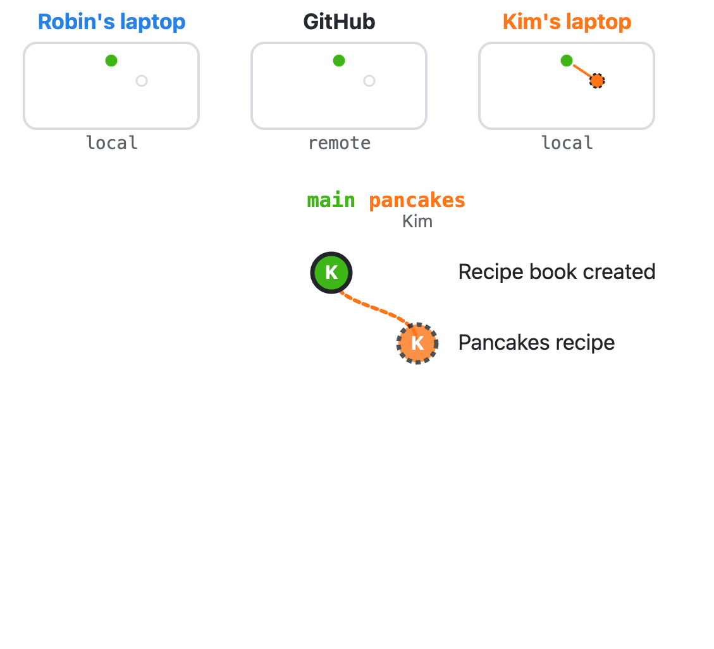
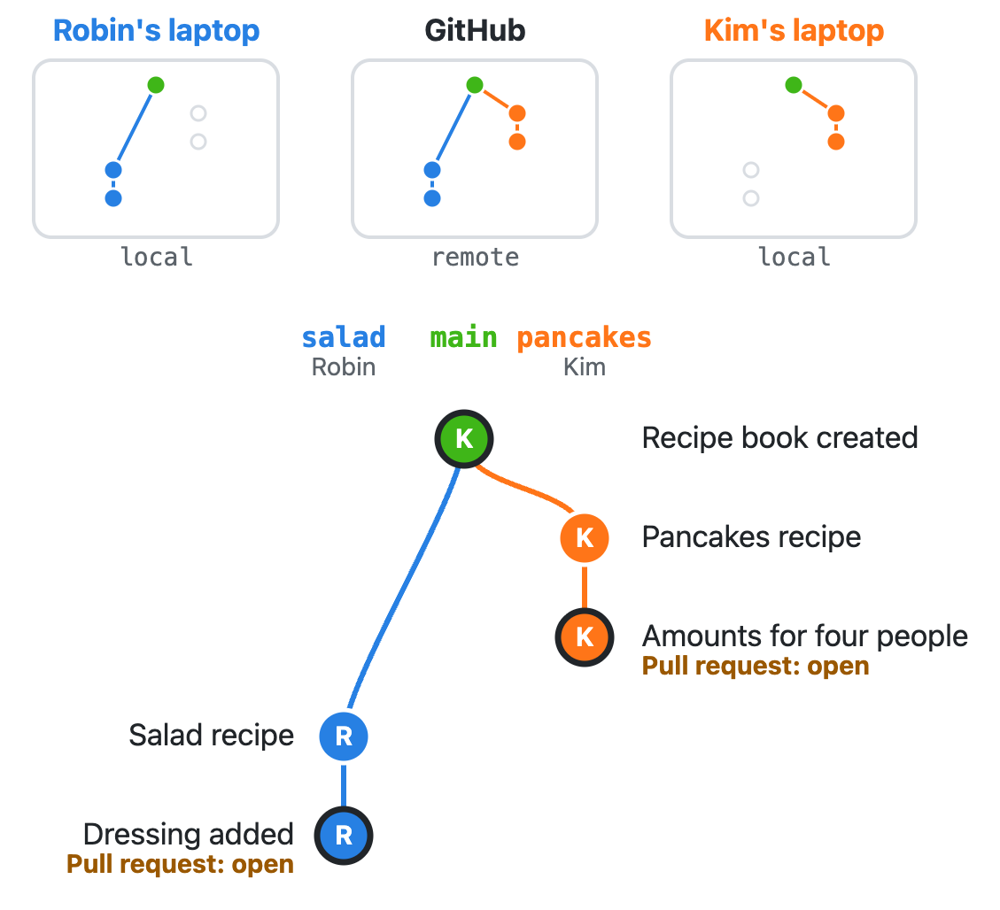
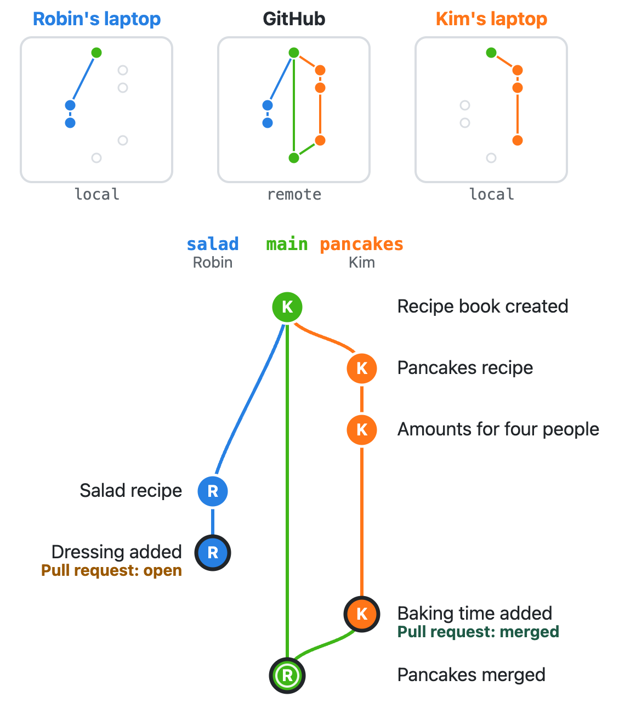

Git for Scientists
From your own file to a merged pull request, and how this workshop is built
Global Health Engineering, ETH Zurich
20 November 2026
Welcome
Two seats today
You sit on two seats at the same time.
Learner
09:40 to 10:55
You take a file of your own through one full loop: branch, commit, pull request, review, merge.
Educator
11:00 to 11:30
You look at how this workshop is built and run, and what you would keep or change for your own teaching.
The watching sheet on your table is for the educator seat. Write on it from now on: a moment where you were lost or waiting, one thing you would keep, one thing you would change.
Find your neighbour
Raise your hand if you use Git every week.
Now look around. If you have never used Git, sit beside a raised hand. Move now, with your laptop.
- You work in pairs today, each person on their own laptop.
- Pre-work not finished? Sit with a neighbour who has it. You follow on their laptop and you are the reviewer of their pull request.
You have done the important part already
- A repository of your own, three lines about your teaching, a clone, a commit from your laptop: in about an hour.
- Today we walk through the same steps together and add the part that needs a second person.
- This is not a course about AI. What agents such as Claude Code do in a repository rests on exactly these steps.
- Things may go wrong here. Everything we do today can be undone.
Who is in the room
From your 26 answers in the survey:
10
do not use Git today
13
use Git regularly or extensively
16
teach Git or plan to
A mixed room. That is why you sit in pairs, and why the second half of the workshop is about teaching.
How we work
Three ways of working. The one that applies is at the top of the slide.
My turn I show something on my screen. You watch and type nothing.
Our turn We do the same step at the same time: I on my screen, you on yours.
Your turn You work in pairs on a task. I help where it sticks.
Today
| Time | What |
|---|---|
| 09:30 | Two seats, your neighbour |
| 09:40 | What is a commit? One repository, several places |
| 09:50 | Your commits in GitHub Desktop and on GitHub |
| 10:00 | Branch and pull request |
| 10:08 | I show it: a file goes into the shared repository |
| 10:20 | Your turn: your file as a pull request |
| 10:40 | Review and merge, in pairs |
| 10:55 | Break |
| 11:00 | Educator seat: how this workshop is built, and your notes |
The schedule is tight. Questions that have no room go on a sticky note for 11:00.
The commit
What is a commit?
A commit is a saved state of your files, with four pieces of information:
- Who made it: a name and an email address
- When: date and time
- What changed: line by line
- Why: the message you write with it
Traces in a real repository
My turn
The website of this workshop, public on GitHub: gitforsci-rdc/website
- 14 commits from 9 to 17 November
- 9 November: “pre-work site for the RDC 2026 iteration, steps 1 and 2 visible”
- 15 November, a Sunday, 22:00: “pre-work steps 3 to 5 for the GitHub Desktop route”
- 17 November: “pre-work step 6, your own repository and first commit”
A question for you: When were your instructions written?
9 of the 14 commits are from the last three days, 4 of them after 22:00.
Git forgets nothing. That is the use of it, and it is the reason to choose what goes into a commit.
One repository, several places


Pictures: Lars Schöbitz, CC BY 4.0
Your commits in GitHub Desktop
Our turn
- Open GitHub Desktop.
- Choose your repository
teaching-your-usernameat the top left. - Click the tab History.
You see your own commits from the pre-work: who, when, what, why.
Do you see three commits? Thumbs up.
Commits on GitHub
My turn
I show the repository teaching-rainbow-train in the browser.
- From GitHub Desktop to GitHub: menu Repository, View on GitHub
- The list of commits: the clock with the number
- One commit up close: who, when, what, why
- Verified beside a commit: it was made in the browser, and GitHub signed it. A commit from your laptop has no such mark. Both are fine.
Your commits on GitHub
Your turn
- In GitHub Desktop: menu Repository, View on GitHub. Your repository opens in the browser.
- Click the clock with the number above the list of files on the right, for example 3 Commits.
- Show your neighbour one commit: who, when, what, why.
The same commits as in GitHub Desktop. Your laptop and GitHub hold the same state.
A button is a command
My turn
GitHub Desktop runs commands for you. In a terminal, in RStudio, in Positron and in VS Code they carry these names:
| In GitHub Desktop | The command |
|---|---|
| History | git log |
| Changes | git status |
| Commit to main | git commit |
| Push origin | git push |
| Fetch origin, Pull origin | git pull |
What you learn today carries over to the tool you teach with.
Branch and pull request
Create a branch, then open a pull request




K is Kim, R is Robin. Dashed: only on the laptop. Dark border: the newest commit of a branch.
Robin works at the same time



The shared repository
From your repository into the shared one
Before
- Your three lines are in your own repository
teaching-your-username, in the fileyour-username.md - Only you write there
After
- The same file is also in the shared repository
workshop, in the folderpeople, on a branch of your own - A pull request asks to take it into
main - Your neighbour reads it, and merges it
You copy the file. Never the repository folder: it carries a hidden folder .git, and Git then sees a repository inside a repository.
A file goes into the shared repository
My turn
Lean back and watch. I work with the account rainbow-train, as a participant like you.
- Open the repository
workshopand click Fetch origin - Create the branch
people-rainbow-train - Copy the file
rainbow-train.mdinto the folderpeople - Commit
- Publish the branch
- Open the pull request and request a reviewer
Your file as a pull request
Your turn
Open this page first: gitforsci-rdc.github.io/website/workshop/add-your-file.html. It has all the steps, also when this slide is gone.
In pairs, 20 minutes, back at 10:40.
- Go through steps 1 to 5 on the page, both at the same time, each on your own laptop.
- Request your neighbour as the reviewer.
- Do not merge yet. Reading by a second person is the point of the exercise.
Stuck? Raise your hand, I come to you.
Review and merge
A second person reads
My turn



Review your neighbour’s pull request
Your turn
In pairs, 10 minutes. The steps are in step 6 of the page.
- Reviewer: open your neighbour’s pull request, tab Files changed. Write one question as a comment on the line
What blocks me. - Author: answer in the file on your laptop, commit, Push origin. The open pull request shows the new commit.
- Reviewer: click Merge pull request, then Confirm merge.
- Both: in GitHub Desktop switch to
mainand click Fetch origin, then Pull origin.
After the pull, the folder people on your laptop holds the files of everyone who is merged.
Break
Until 11:00.
Take your watching sheet with you. After the break you compare it with your neighbour’s.
The educator seat
How this workshop is built
Everything you used this week is a repository.
| What you saw | What it is |
|---|---|
| The website with the six steps | A repository, built into a site on every merge |
| The survey | A small app, its answers in a database |
| The invitation to the organisation | A script that reads the usernames from the survey |
| Your issue with five boxes | A script, one issue per person from one template |
| The comment after you ticked a box | A watcher that looks every 10 minutes and tells me what changed |
| These slides | A text file in the same repository as the website |
One course organisation on GitHub for you, one for the material, one for the administration. The next cohort gets a new copy of the first one.
Your preparation, in counts
Tuesday 17 November, 15:00. Four emails, the last three on 15, 16 and 17 November.
27
answered the survey
15
joined the organisation
7
finished steps 3 to 5
2
made the first commit from the laptop
This is what preparation looks like in most courses: several reminders, and most of the work in the last hours. This time also because my instructions came late.
The same design, three days ago
On Tuesday I ran this design in German, online, for 16 people who do not write code.
- 13 pull requests in two hours, from people who had never used Git
- Three clones of one repository on one laptop: “clone once” is now a sentence in your Step 6
- A copied repository folder, with its hidden
.git: today you copied one file - The real email address in most first commits, although the account said private: the setting in GitHub Desktop comes first
- Too many emails before the workshop
Why GitHub Desktop?
Your preference in the survey:
11
RStudio
6
GitHub Desktop
4
Positron
5
no preference
I chose against the largest group. Half of the room does not write code in R, and 10 of you do not use Git today. GitHub Desktop needs no programming language, and its buttons carry the names of the commands.
Compare your watching sheets
Your turn
In pairs, 5 minutes.
- Read each other’s watching sheet.
- Agree on one thing and write it on one sticky note, in a full sentence.
- Bring it to the wall, under one of three headings: Keep, Change, Missing.
Would you teach this?
I offer a workshop for people who teach Git and GitHub: this course design, its scripts and the material, for you to run with your own groups.
Answer with a commit, in your own repository teaching-your-username:
Open the file
your-username.mdand add one line:- Teach the teachers: yes / maybe / no. What I would need:Commit to main, then Push origin.
Half a day, online, spring 2027. Your answer commits you to nothing.
Thank you
Thank you
Everything stays open after today:
- The website and these slides: https://gitforsci-rdc.github.io/website/
- The steps of today: https://gitforsci-rdc.github.io/website/workshop/add-your-file.html
- The material is licensed CC BY 4.0. Take it, change it, teach with it.
Slides made with revealjs and Quarto: https://quarto.org/docs/presentations/revealjs/